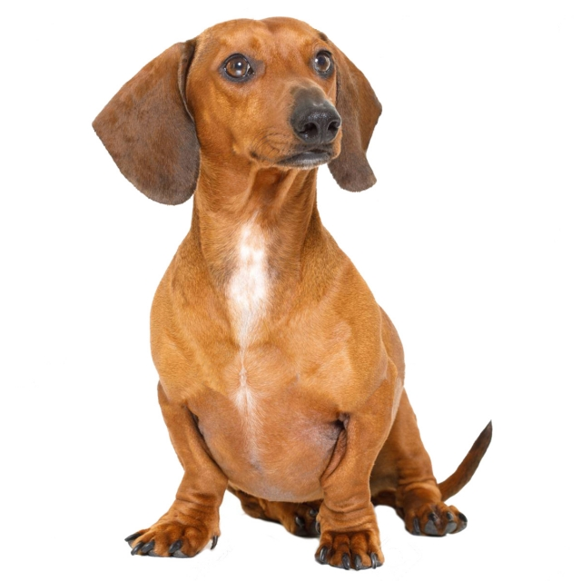
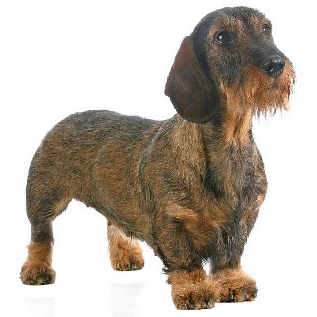
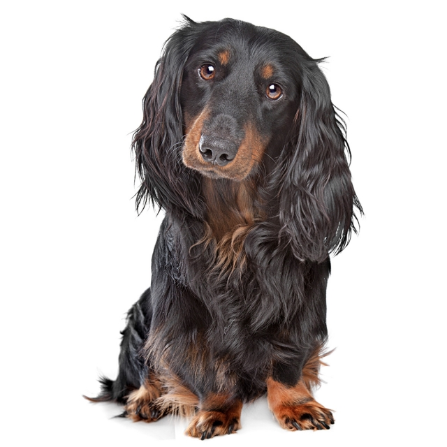
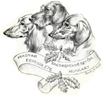

Éredekes tények a Tacskóról:
A tacskó német eredetű rövid lábú, kis termetű munkavadászkutya, három méret- és szőrváltozata ismert. Szőrváltozatai: rövidszőrű , szálkásszőrű , hosszúszűrű.

Profil: kotorékeb, kedvenc.
Marmagasság: 16-27 cm.
Testtömeg: 3,5-9 kg.
Táplálékigény: 250-550 g/nap.
Alomszám: 6-8 kiskutya.
Várható élettartam: 10- 14 év.

Profil: vadászkutya, kedvenc.
Marmagasság: 16- 27 cm.
Testtömeg: 3,5-9 kg.
Táplálékigény: 250- 550 g/nap.
Alomszám: 4-6 kiskutya.
Várható élettartam: 10-14 év.

Profil: kotorékeb, kedvenc.
Marmagasság: 16-27 cm.
Testtömeg: 3,5-9 kg.
Táplálékigény: 250-550 g/nap.
Alomszám: 6-8 kiskutya.
Várható élettartam: 10- 14 év.
Néhány szemléltető az előbb felsorolt szőrfajtákról (a felsorolt szőrfajtákkal megegyező sorrendben):

Ha éredekelnek a tacskók és szeretnél gazdája lenni egyne, akkor az alábbi linken megtalálod az elérhetőségét a Magyar Tacskótenyésztők Egyesületnek (Katt a szöveg feletti képre).